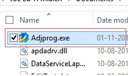
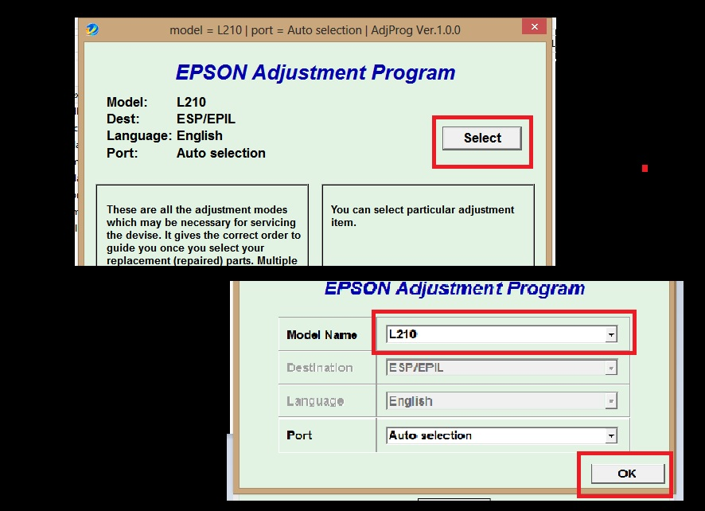
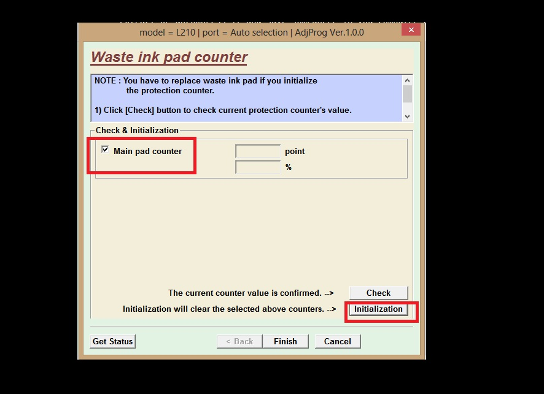
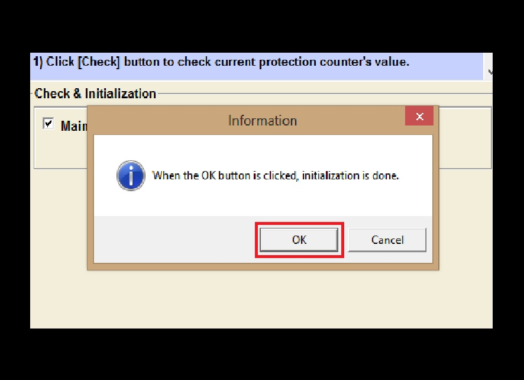
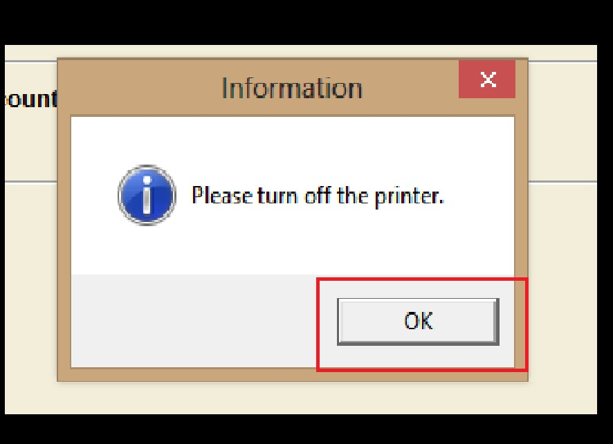
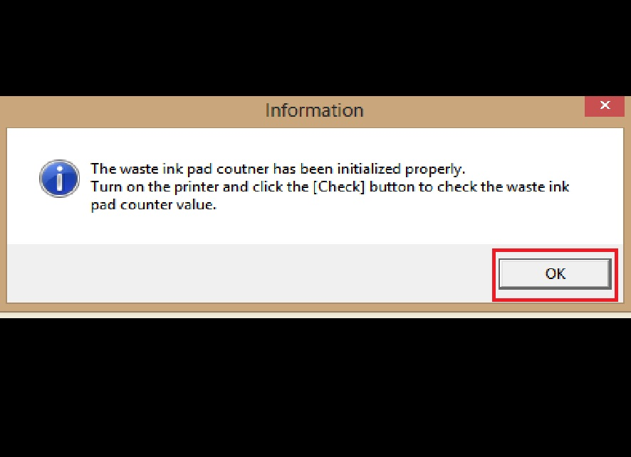

Single Post
Epson Inkpad Tutorial
How to Reset an Epson L Series Printer with Epson Adjustment Program Resetter
May 11, 2020Epson printers that are used continuously, after have reached the maximum limit of print count, will surely encounter an error. An error message will appear in your screen that shows "A printer's ink pad is at the end of its service life. Please contact Epson support." . You may also encounter Error Blink problem on Power indicator, ink indicator, Paper indicator both alternately or simultaneously. If all those error manifest, then surely you may need to reset your printers inkpad counter.
In order to to reset your printer we need download a utiliy program called Epson Adjustment Program. I have provided the link so that you can download it directly from my Google Drive. Download the file which corresponds to your Epson model. Once downloaded, you have to extract or uncompress it and save somewhere in you computer drive. Download here.
Now that we are ready, please follow the guidelines below:
- Inside the folder, run the executable file as shown in the figure below. 
- Click Select. Then in the dropdown select your model name, and click OK. 
-
Select Waste inkpad counter and click OK.

- Check Main pad counter, and then click Initialization 
- Click Ok. 
- Turn off your printer, then click Ok. 
- Turn on your printer, then click Ok. 
- Congratulations, you're done!
WARNING:
You have to check your printer's waste ink pad found underneath your Epson printer.It's a little compartment underneath printer that catches wasted inks during cleaning maintenance. The ink inside it may spill out on your desk leaving some mess. This can also damage the circuitry if spilled with.
-
FEATURED POSTS

SOYUZ TMA-M
FEBRUARY 6, 2023 -
RECENT POSTS
-

ALIEN LIFE
FEBRUARY 3, 2023 -

THE GALAXY
FEBRUARY 1, 2023
-